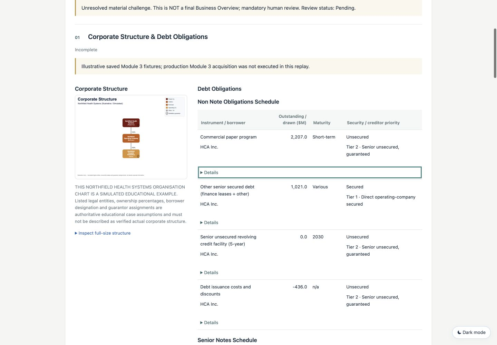
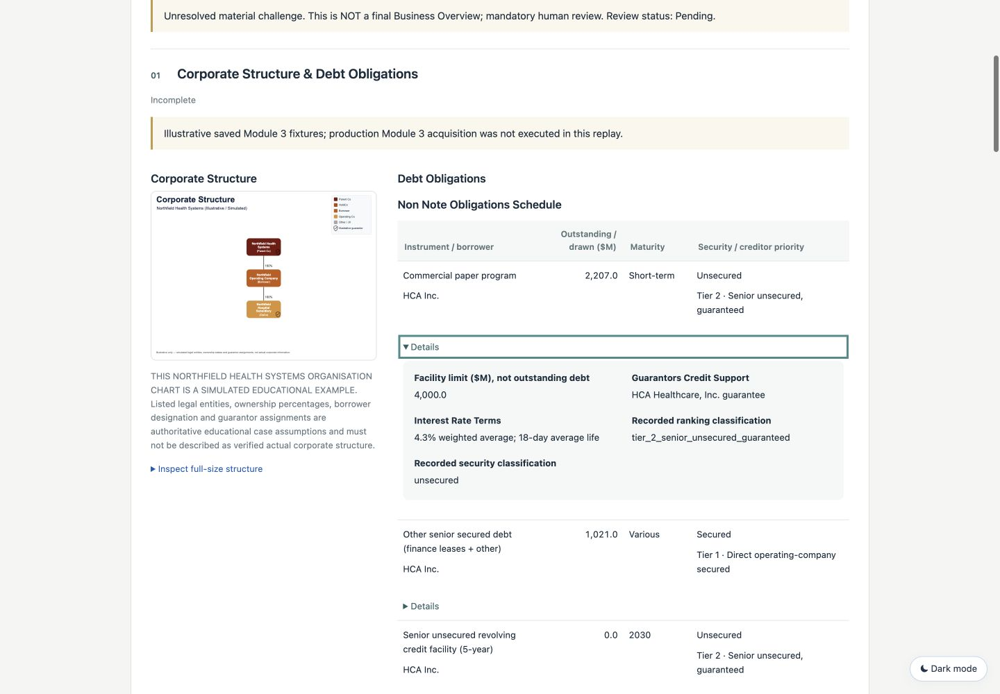
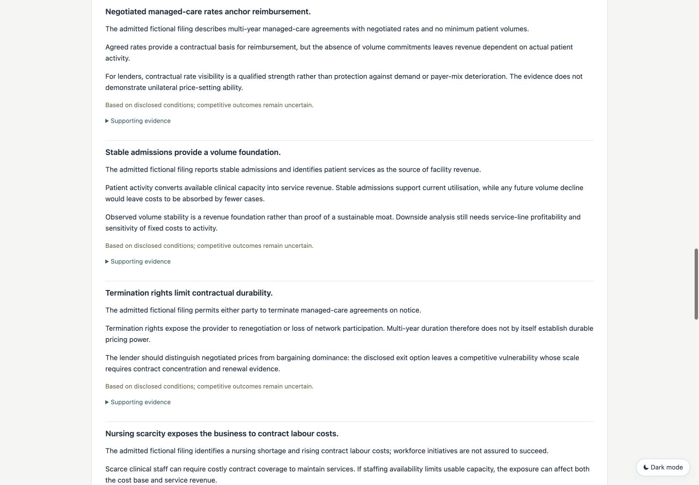
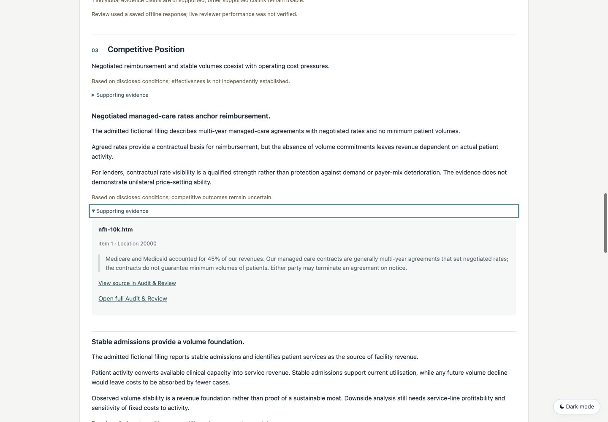
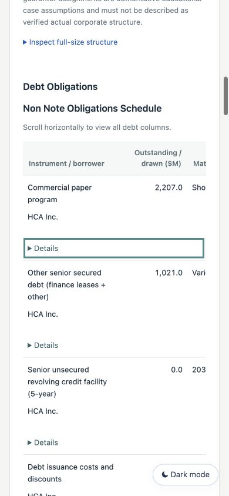
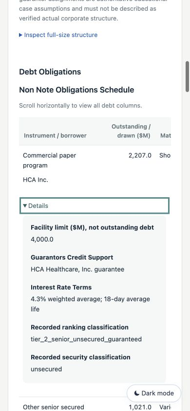
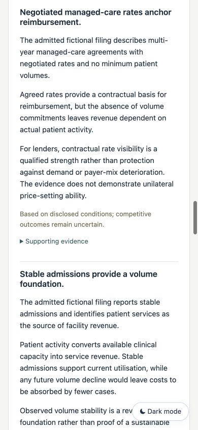
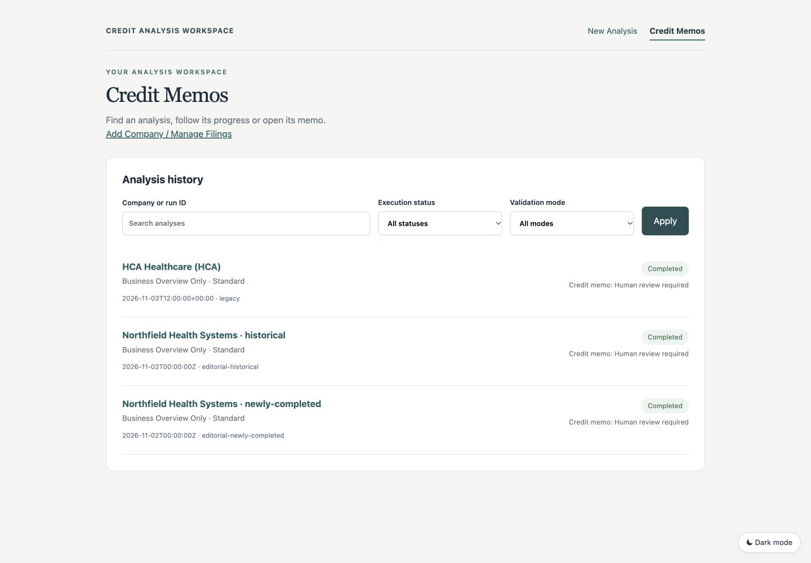
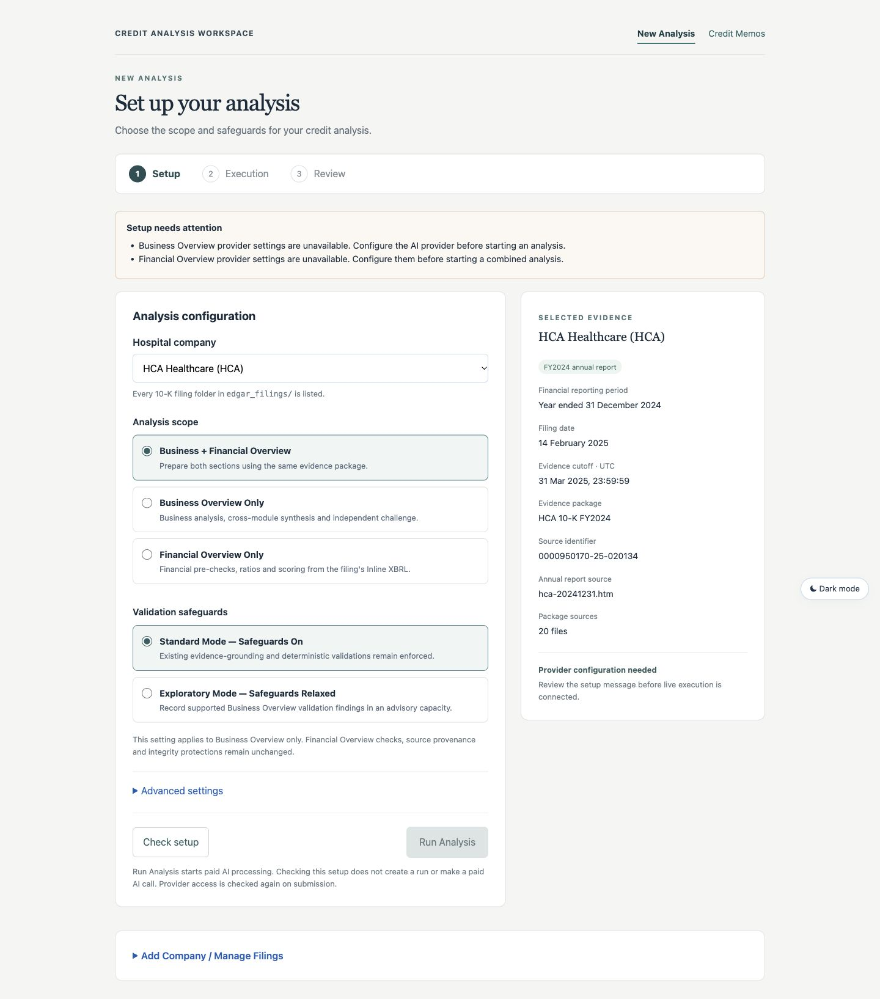
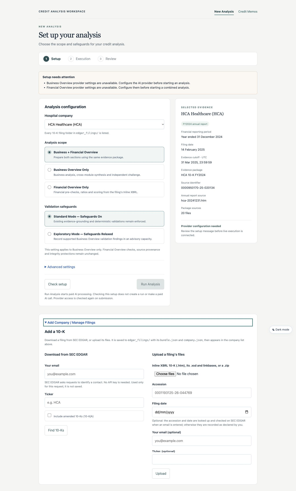
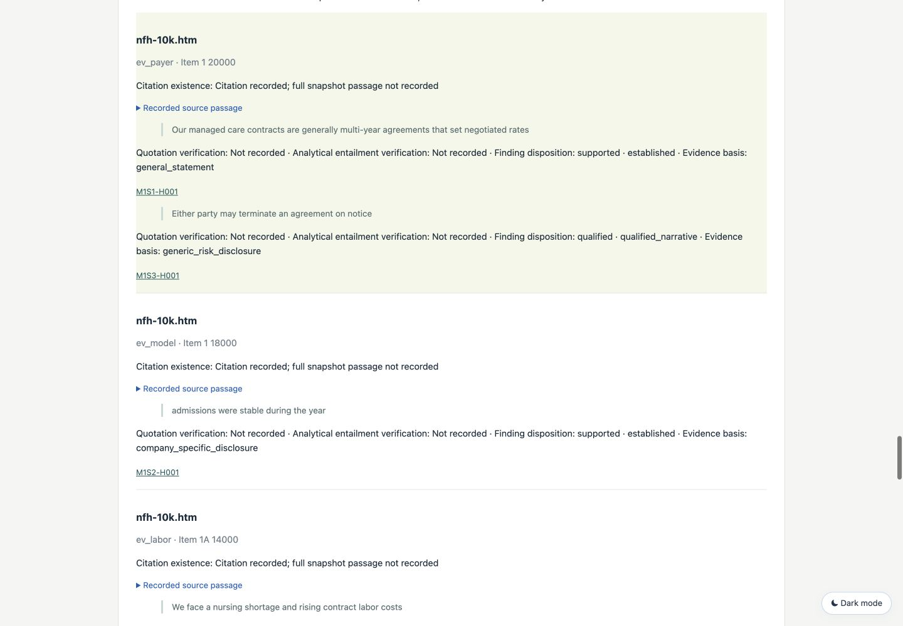
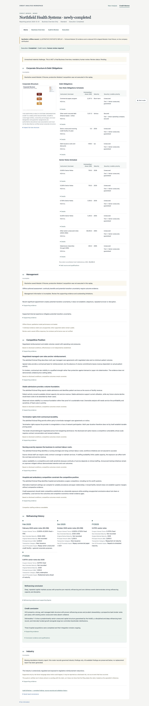
Real local app, saved synthetic offline runs. Desktop 1440 × 1000 and mobile 390 × 844. Click any image for the original capture.
Saved standalone HTML · Expanded export HTML · Historical HTML











